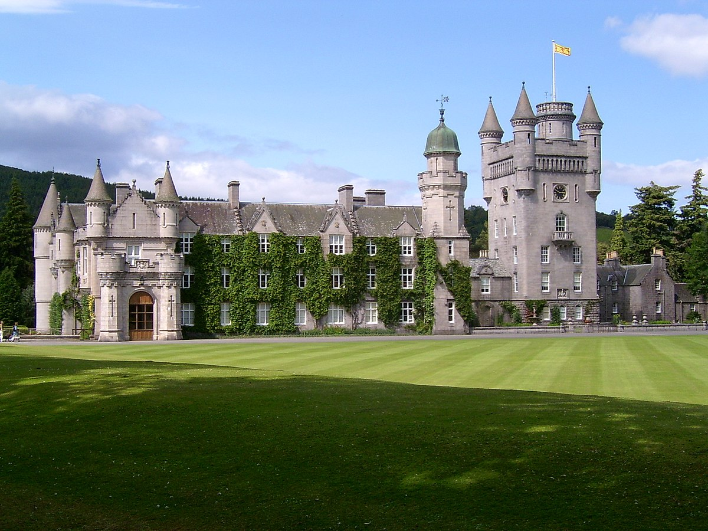
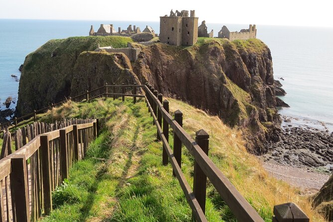
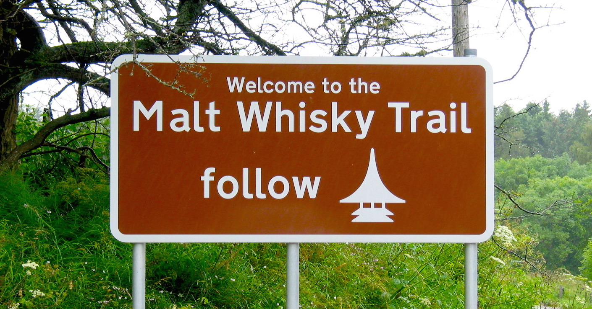

Welcome to Your Bed and Breakfast in the heart of Aberdeenshire
Explore the regal Balmoral Castle, nestled in the Cairngorms National Park, and uncover the dramatic tales within the ancient walls of Dunnottar Castle overlooking the North Sea. Embark on the renowned Malt Whisky Trail, discovering the art of whisky-making in Aberdeenshire's esteemed distilleries. Immerse yourself in the maritime heritage at the Aberdeen Maritime Museum, where captivating exhibits showcase the region's connection to the sea. Your cozy retreat at our B&B provides the perfect base to experience the allure of Aberdeenshire's landmarks. Join us in creating lasting memories surrounded by stunning landscapes and rich history.
What to Explore Nearby
-
Balmoral Castle:

Nestled in the scenic Cairngorms National Park, Balmoral Castle is the summer residence of the British Royal Family. Visitors can explore the beautiful gardens, take guided tours of the castle's opulent interiors, and enjoy the picturesque surroundings. The estate also features walking trails and a visitor center, providing a glimpse into the royal heritage. -
Dunnottar Castle:

Perched dramatically on a cliff overlooking the North Sea, Dunnottar Castle is a medieval fortress with a rich history. The castle ruins are not only visually stunning but also tell tales of sieges, battles, and royal visits. The location offers breathtaking coastal views and is a must-visit for history enthusiasts and those seeking a glimpse into Scotland's past. -
Whisky Distilleries along the Malt Whisky Trail:

Aberdeenshire is part of the famous Malt Whisky Trail, boasting several renowned distilleries. Take a tour to discover the art of whisky making, learn about the distillation process, and, of course, sample some of Scotland's finest single malts. Each distillery has its unique charm and character, contributing to the region's rich whisky culture. -
Aberdeen Maritime Museum:
Located in the city of Aberdeen, the Maritime Museum showcases the region's maritime heritage. With exhibits ranging from shipbuilding and fishing to offshore oil and gas exploration, the museum provides a comprehensive look at Aberdeen's connection to the sea. Interactive displays and artifacts make it an engaging destination for visitors interested in the maritime history of the area.